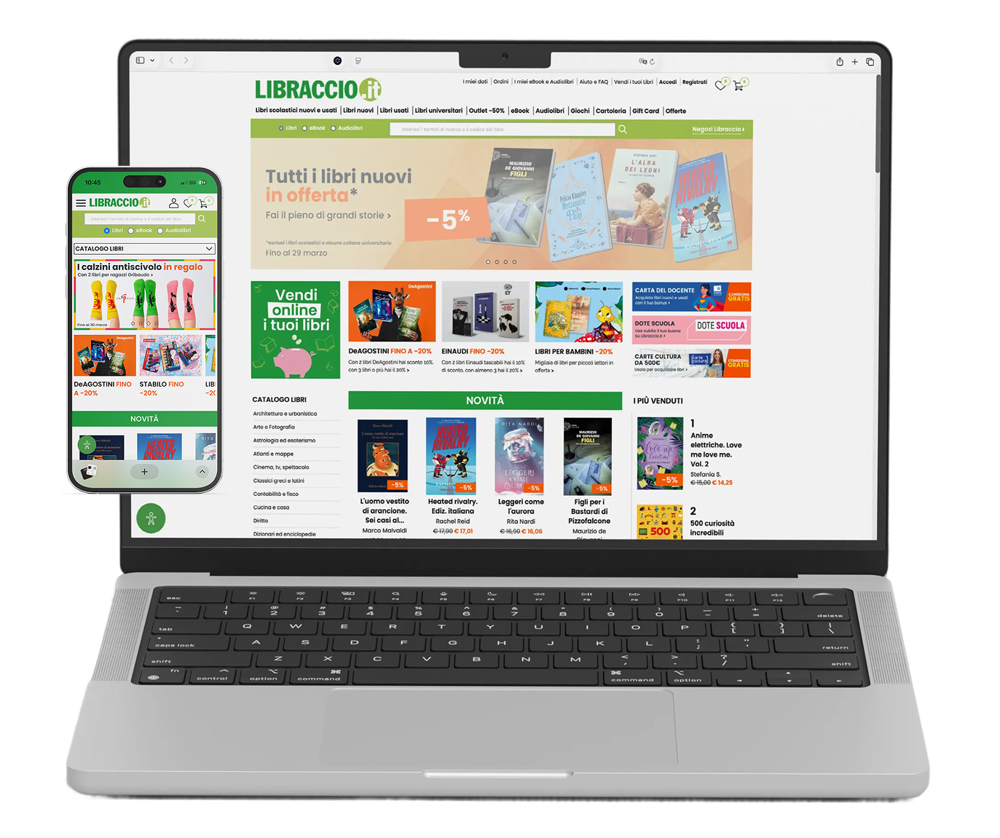
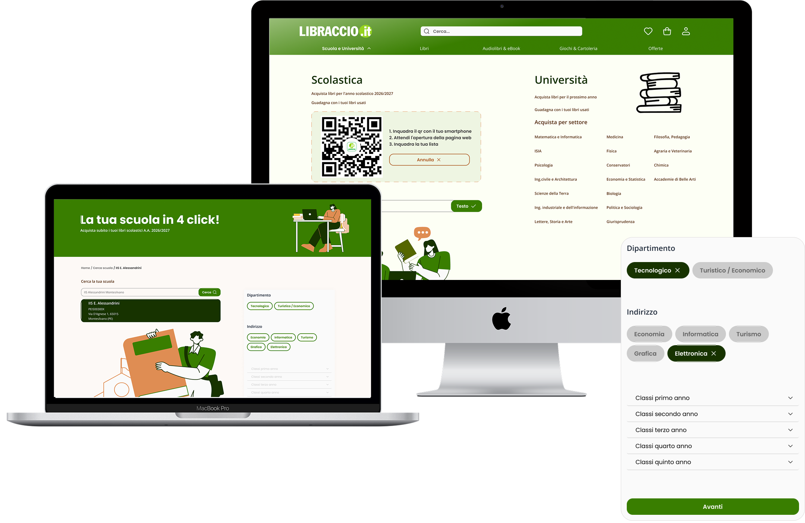
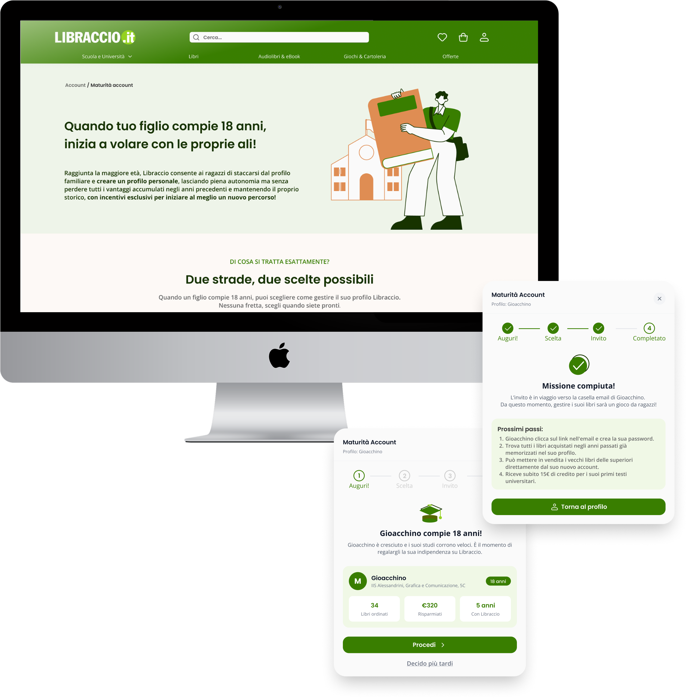

Progetto Formativo · UX/UI Design
Libraccio.it
Brief
Quante volte ti è capitato di impazzire cercando i tuoi libri scolastici online?
Scommetto che la risposta sia più di una. Chiunque abbia dovuto comprare libri scolastici online almeno una volta conosce già il copione. Apri Libraccio.it, inizi la ricerca pieno di buone intenzioni… e dopo pochi minuti sei già sommerso da codici ISBN incomprensibili, edizioni quasi identiche ma non uguali, condizioni e disponibilità poco chiare e continui controlli per capire se stai davvero acquistando quello giusto. Questo progetto ha, quindi, lo scopo di rendere Libraccio.it un'esperienza più fluida e funzionale per gli utenti.

Dall' Expert Review alla User Research, fino alla Riprogettazione del sito.
Circa il 76% degli utenti, pur utilizzando frequentemente il sito, non sa dell'esistenza della principale feature di Libraccio.it: la lista adozioni online.
Dato emerso da Interviste e Survey.
Insights principali
Il sito travolge anziché accogliere
Il sito è il primo punto di contatto con Libraccio, ma l'eccessivo rumore visivo e la navigazione caotica rendono l'esperienza disorientante già al primo approccio.
Il sito sa fare molto, ma non lo dice
Le funzionalità ci sono, ma restano invisibili. Il sito non guida, non spiega e non conferma: l'utente avanza a tentativi, senza mai sentirsi accompagnato nel percorso.
Stesso libro, edizione sbagliata
Trovare l'edizione corretta è uno dei momenti più frustranti del processo d'acquisto. I codici ISBN ed EAN sono sconosciuti alla maggior parte degli utenti, che faticano a riconoscerli, interpretarli e usarli per orientarsi.
Da mobile si esplora, da desktop si compra.
L'acquisto su mobile è percepito come meno sicuro e intuitivo. Per ordini importanti come la lista scolastica, gli utenti cercano il controllo che solo il desktop offre o abbandonano verso piattaforme più fluide.
Libraccio vince sul territorio, perde sul digitale.
Il 65% degli utenti sceglie Libraccio in negozio, ma online la spesa si disperde verso Amazon e Vinted. La causa non è l'offerta è la semplicità percepita delle piattaforme concorrenti.
Usato è una parola che non basta.
Le condizioni di un libro usato sono oggi affidate alla percezione di chi vende. Senza un sistema di descrizione condiviso e accurato, l'utente non riesce a fidarsi di ciò che compra e preferisce rinunciare.
La Challenge
La sfida progettuale
nasce da un'opportunità precisa: semplificare il processo con cui genitori e studenti trovano e acquistano i libri scolastici della propria classe su Libraccio.it, rendendo visibili e convincenti il vantaggio economico del libro usato, le funzionalità e le possibilità offerte da sito.
Come abbiamo creato valore?

Home Semplificata: solo quello che ti serve, esattamente quando ti serve.
Dalla home alla lista, in pochi tap. Scegli il grado di usato e aggiungi tutto al carrello in un'unica sessione.

Ricerca scuola semplificata
Digita il nome della scuola, scegli il dipartimento e il settore oppure scannerizza il QR code con la fotocamera del tuo smartphone. La lista adozioni si carica automaticamente, pronta per l'acquisto.

One Click Buy, Risparmio Smart
Nessuna scelta da fare. Il sistema analizza ogni libro della lista e seleziona automaticamente usato o nuovo in base al risparmio reale e alle condizioni disponibili. Un click, la combinazione più economica è già nel carrello.

Account Famigliare
Registra ogni membro della famiglia, accedi alla lista della tua classe e acquista tutto in una volta sola.

Account Maturità: finita la scuola, il tuo profilo cresce con te!
Quando lo studente è pronto, l'account si emancipa: storico acquisti, lista universitaria precaricata e incentivi esclusivi per ricominciare. Chi resta in famiglia mette il profilo in pausa nessun dato perso, tutto riattivabile quando serve.